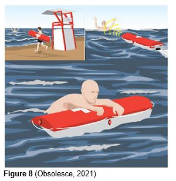

IT Technologies
Our group covered below 4 topics:
Robots
What is a Robot?
The definition of a robot is “A type of machine capable of carrying out a complex series of actions automatically. (Robot noun - Definition, pictures, pronunciation and usage notes | Oxford Advanced American Dictionary at OxfordLearnersDictionaries.com, 2021) This is an extremely broad definition and can be easily misunderstood. Often when people think of robots, they are thinking about science fiction movies with robots resembling humans. Robots however refer to a substantial number of machines that already exist in our modern world.
An example of highly technological of robots currently used around the modern world is in the manufacturing industry. Robots are often used in manufacturing as they are autonomous and whilst they require maintenance, they are overall self-sufficient when given the materials needed to execute a task. For example, if a robot was programmed to pull items off of multiple assembly lines to fit them together and put them back into the assembly line for the next procedure, this could be easily done with today's technology and in fact multiple car companies are already doing this. Automation and Test Systems is a company that currently makes and ships manufacturing robots with automotive manufacturing as their leading market.
Another example of robots currently being manufactured today are the robots designed for rescue operations. There is a myriad of robots being designed created and perfected today that are specifically built for rescue operations as a main concern to rescuing people is the potential threat to the rescue team’s safety. An example of a robot designed for rescue is the Hydronalix. The first iteration of the Hydronalix was designed in 2010 and was created to help people caught in dangerous waters. The Hydronalix works like a flotation device and gained popularity in 2016 when it was used to assist over 240 people within the first 10 days of its release to public use. (12 Examples of Rescue Robots, 2021) Robots are not only used for large scale projects such as manufacturing and rescue operations.
|  | Many robots are built for personal use, with a well-known example being the robotic vacuum. Commonly referred to as ‘Roombas’ by a large majority of the public, named after a specific brand, the robotic vacuum is used by many to keep their floors tidy. |
Robotic vacuums work similarly to conventional vacuum cleaners; however, they are often smaller and autonomous. They are built with censors that allow the robotic vacuum to drive like a motorised car and when it bumps into something those sensors let the robotic vacuum know that it needs to turn. They are often built with only two wheels allowing the vacuum to turn on a point. This is so they can turn on any flat surface regardless of space constraints. (2021). The reason for using robotic vacuums as an example is because often people become highly attached to their personal robotic vacuums. This attachment may seem unusual, however a psychological trait many humans have is to attach human aspects to non-human objects.
This causes people who become attached to their robotic vacuums, to treat it as a pet more than a cleaning tool. There are many examples of people becoming upset and distraught at their robotic vacuum becoming damaged in some way, even going so far as to send it to a mechanic and wait weeks for their robotic vacuum to be repaired, even when a functioning one can be given to them as a replacement immediately. The autonomous nature of robots is a major factor in how people will see humanity when they are fully aware it is a machine just following its programming. This can lead to some interesting outcomes for robots in the future.